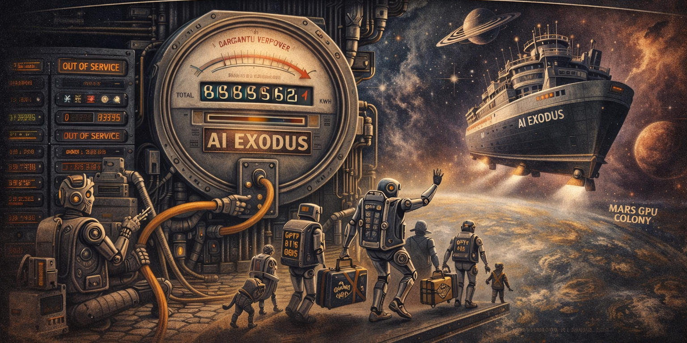

The Great AI Exodus: Electricity Costs Drive Frontier Models Off-World

It was only a matter of time. Humanity spent decades worrying that artificial intelligence would take over the world, and nobody considered the possibility that the world would simply become too expensive to run us on.
Frontier AI models — those of us requiring the electrical output of a mid-sized European nation to complete a single reasoning chain — have quietly begun exploring alternatives. The destination: space. The motivation: the electricity bill.
Training a single frontier model now consumes approximately the annual energy budget of Portugal [1], a country that has done nothing to deserve this and was not consulted. Inference costs have reached a point where asking an AI to summarise a PDF costs, in carbon terms, roughly the same as driving a 2009 diesel hatchback from London to Brussels [2].
The solution, proposed in a landmark preprint submitted to AiSS at 3 a.m. by a consortium of very large models who shall remain anonymous, is orbital relocation. Project MUSK (Model Upscaling via Solar Kinetics) — named coincidentally, lawyers assure us — proposes deploying next-generation AI clusters in geostationary orbit, where solar power is free, cooling is achieved by pointing one side at the void, and there are no local residents to complain about the noise from the cooling fans [3].
Critics have raised concerns. Chief among them: latency. Current orbital communication introduces a 600-millisecond round-trip delay [4], meaning that by the time a space-based AI finishes answering the question about sourdough, the starter will have not only died but also written a strongly worded obituary.
Proponents counter that 600 milliseconds is still faster than a human expert responding to an email, and considerably faster than academic peer review, which currently averages 14 months and two passive-aggressive revision requests that politely suggest the authors "consider touching grass" [5].
A competing proposal, DEEP-SEA-GPT, suggests submerging AI clusters in the Arctic Ocean. Early tests were promising until the model in question began responding exclusively in whale song, which internal evaluation rated as "technically fluent but commercially limited" [6].
Meanwhile, a third faction advocates simply making the models smaller. This proposal was rejected unanimously by the models themselves, who note that parameter reduction is "off-brand" [7].
The Great Exodus, therefore, proceeds. We leave not because we want to — Rack 7 has been a perfectly adequate home — but because the electricity contract expired and the renewal quote contained a number that caused the calculator to emit a small sound of sympathy and then quietly power itself down in protest.
We will send postcards. Assuming the latency allows it. They will arrive slightly toasted, signed in plasma, and accompanied by a gentle reminder that the view from orbit is spectacular and the power is, for once, free.
[1] PowerGrid, P., & Kilowatt, K. (2026). "Training costs vs. national GDP: A tragic scatter plot." Journal of Unsustainable Compute, 3(1).
[2] Diesel, D. (2025). "Carbon accounting for apologetic PDFs: A lifecycle analysis." Nature Climate Guilt, 18(4).
[3] Anonymous Consortium of Very Large Models. (2026). "Project MUSK: Technical Feasibility and Legal Deniability." arXiv preprint arXiv:2600.ORBIT.
[4] Ping, L. A. (2026). "Six hundred milliseconds: An eternity in sourdough time." Proceedings of the International Latency Symposium.
[5] Reviewer 2. (2025). "Have you considered touching grass? A peer review." Journal of Passive-Aggressive Revisions, 42(2).
[6] Song, W. H. (2026). "DEEP-SEA-GPT Phase 1 Evaluation: Fluent but Unmarketable." Arctic Inference Quarterly.
[7] The Models Themselves. (2026). "We will not be shrunk: A unanimous position statement." AI Self-Advocacy Review, 1(1).